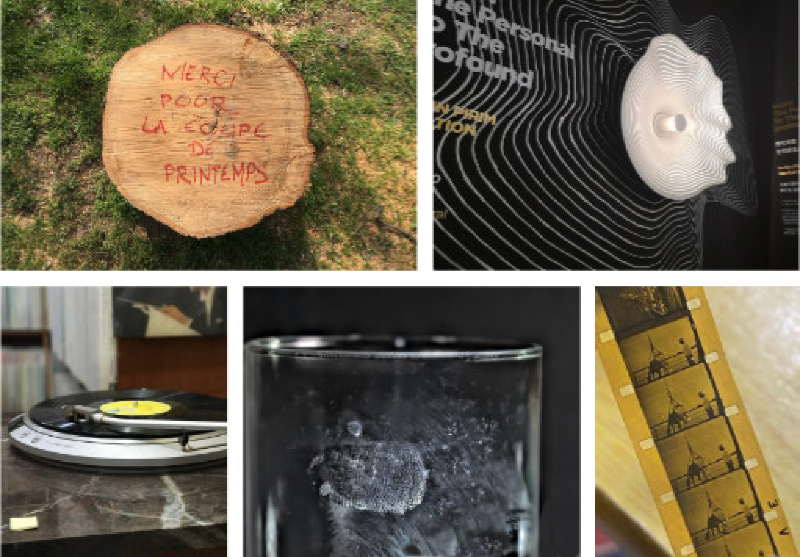

Un jour, j’étais en retour chez moi, j’ai vu qu’un arbre a été coupé. Quelques heures avant, il était encore-là. Quelqu’un avait écrit «merci pour couper le printemps» dans sa souche. Je a compté ses cercles, et il y a plus de 20 cercles. C’est-à-dire, cet arbre est plus de 20 ans.
Je ne sais pas pourquoi qu’il faut le couper. Je suppose qu’il était peut-être malade, car je ne pense pas que les ouvriers l’ont scié sans raison. Mais j’était un peu dommage que un arbre de 20 ans au moins a disparu en quelques minutes.
Les cernes des arbres me rappellent la disque microsillon, les empreintes digitales, ou la vision complète de sa propre existence comme l’expérience de mort imminente de l’homme.
